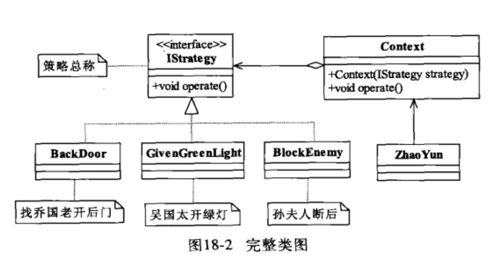
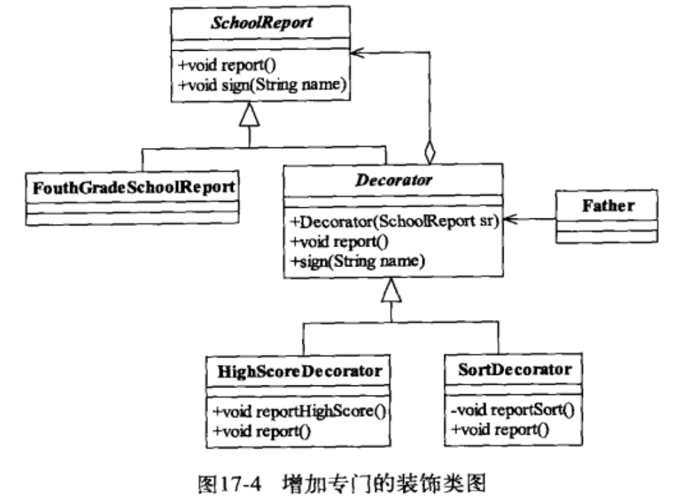

设计模式
[TOC]
设计模式
设计模式就是讲如何应对变化的。
SOLID
Single Responsibility Principle
Open Closed Principle
Liskov Substitution Principle
Law of Demeter
Interface Segregation Principle
Dependence Inversion Principle
里式替换原则
里式替换原则教我们如何实现子类。
 麻省理工学院教授，04 年获得冯诺依曼奖，08 年获得图灵奖。
麻省理工学院教授，04 年获得冯诺依曼奖，08 年获得图灵奖。
核心概念
Liskov Substitution Principle LSP 原则
把父类替换成子类，结果不变！
面向接口或父类编程：在类中调用其他类时，务必要使用其他类的父类或者接口，如果不能使用父类或接口，则说明类的设计已经违反了 LSP 原则。
玩具枪案例：如果子类不能完整地实现父类的方法，或者父类的某些方法在子类中已经发生畸变，则建议断开父子继承关系，采用依赖、聚合、组合等关系代替继承。
LSP 可以正着用，但不能反着用。
对于覆盖（重写）来说，父类和子类的同名方法的输入参数是相同的，子类的方法的返回值范围应该小于父类；（肯定要小于父类的，因为客户端是用父类的引用指向子类的对象，如果子类返回的类型父类接不住，那不肯定出错！）
对于重载来说，则要求方法的输入参数类型或数量不相同，在里式替换原则要求下，子类的输入参数要宽于父类的输入参数，这样子类的这个重载方法才不会被调用。（入参范围变大，会产生危险，在调用的时候，就会寻找父类更小入参的方法，进而保证了父类的方法在每一个子类都能被优先执行）。
在采用里式替换原则时，要尽量避免子类的个性。
Demo
A great example illustrating LSP (given by Uncle Bob in a podcast I heard recently) was how sometimes something that sounds right in natural language doesn't quite work in code.
In mathematics, a Square is a Rectangle. Indeed it is a specialization of a rectangle. The "is a" makes you want to model this with inheritance. However if in code you made Square derive from Rectangle, then a Square should be usable anywhere you expect a Rectangle. This makes for some strange behavior.
Imagine you had SetWidth and SetHeight methods on your Rectangle base class; this seems perfectly logical. However if your Rectangle reference pointed to a Square, then SetWidth and SetHeight doesn't make sense because setting one would change the other to match it. In this case Square fails the Liskov Substitution Test with Rectangle and the abstraction of having Square inherit from Rectangle is a bad one.
{kind=link}
依赖倒置原则
Dependence Inversion Principle DIP
核心概念
模块间的依赖通过抽象发生，实现类之间不发生直接的依赖关系，其依赖关系是通过接口或者抽象类产生的。
六个字：面向接口编程！
接口就是契约，先定好契约，再实现具体的细节。
依赖正置：类间的依赖是实实在在的实现类之间的依赖，也就是面向实现编程，我要开奔驰车就依赖奔驰车，要使用笔记本电脑就直接依赖笔记本电脑。
依赖倒置：类间的依赖是接口之间的依赖，也就是面向接口编程。
接口隔离原则
Interface-Segregation Principle
核心概念
接口尽量细化，接口中的方法尽量少。
与单一职责不同。单一职责要求的是类与接口职责单一，注重的是职责，是业务逻辑上的划分。而接口隔离原则要求接口的方法尽量少。例如一个接口的职责可能包含 10 个方法，这 10 个方法都放到一个接口中，并且提供给多个模块访问，各个模块按照规定的权限来访问，在系统外通过文档约束「不使用的方法不要访问」，按照单一职责原则是允许的，按照接口隔离原则是不允许的，因为其要求「尽量使用多个专门的接口」。
迪米特法则
Law of Demeter
核心概念
最少知识原则。一个类对自己需要耦合或调用的类知道得越少越好。
怎么做：解耦！
开闭原则
Open Close Principe
核心概念
对扩展开放，对修改关闭。
一个软件实体应该通过扩展来实现变化，而不是通过修改已有的代码来实现变化。
创建型模式
创建型模式关注点是如何创建对象，其核心思想是要把对象的创建和使用相分离，这样使得两者能相对独立地变换。
工厂方法
工厂模式用于定制对象。
定义一个用于创建对象的接口，让子类决定实例化哪一个类。Factory Method使一个类的实例化延迟到其子类。
工厂方法可以隐藏创建产品的细节，且不一定每次都会真正创建产品，完全可以返回缓存的产品，从而提升速度并减少内存消耗。
传入不同的配置，获取不同的初始化对象。就跟工厂加工产品一样。
静态工厂方法（Static Factory Method）：
List<String> list = List.of("A", "B", "C"); // 创建一个 collection
Arrays.asList("a1", "a2", "a3") // 创建一个数组
Integer n = Integer.valueOf(100);
Stream.of("a1", "a2", "a3") // 创建一个 stream
工厂方法：
public interface NumberFactory {
static NumberFactory impl = new NumberFactoryImpl(); // 接口中也可以 new 对象
// 创建方法:
Number parse(String s);
// 获取工厂实例:
static NumberFactory getFactory() {
return impl;
}
}
public class NumberFactoryImpl implements NumberFactory {
public Number parse(String s) {
return new BigDecimal(s);
}
}
NumberFactory factory = NumberFactory.getFactory();
Number result = factory.parse("123.456");
总是引用接口而非实现类，能允许变换子类而不影响调用方，即尽可能面向抽象编程。
工厂方法是指定义工厂接口和产品接口，但如何创建实际工厂和实际产品被推迟到子类实现，从而使调用方只和抽象工厂与抽象产品打交道。
实际更常用的是更简单的静态工厂方法，它允许工厂内部对创建产品进行优化。
调用方尽量持有接口或抽象类，避免持有具体类型的子类，以便工厂方法能随时切换不同的子类返回，却不影响调用方代码。
生成器
装饰设计模式
装饰设计模式：对一组对象的功能进行增强时，就可以使用该模式进行问题的解决。 装饰和继承都能实现一样的特点：进行功能的扩展增强，但是装饰比继承灵活，装饰的特点：装饰类和被装饰类都必须所属同一个接口或者父类。
Demo:
public class PersonDemo {
public static void main(String[] args) {
Person p = new Person();
// p.chifan();
NewPerson p1 = new NewPerson(p);
p1.chifan();
NewPerson2 p2 = new NewPerson2();
p2.chifan();
}
}
class Person{
void chifan(){
System.out.println("吃饭");
}
}
//这个类的出现是为了增强Person而出现的。
class NewPerson{
private Person p ;
NewPerson(Person p){
this.p = p;
}
public void chifan(){
System.out.println("开胃酒");
p.chifan();
System.out.println("甜点");
}
}
class NewPerson2 extends Person{
public void chifan(){
System.out.println("开胃酒");
super.chifan();
System.out.println("甜点");
}
}
模板方法
https://www.liaoxuefeng.com/wiki/1252599548343744/1281319636041762
可见，模板方法的核心思想是：父类定义骨架，子类实现某些细节。
为了防止子类重写父类的骨架方法，可以在父类中对骨架方法使用final。对于需要子类实现的抽象方法，一般声明为protected，使得这些方法对外部客户端不可见。
适配器模式
将一个类的接口转换成客户希望的另外一个接口，使得原本由于接口不兼容而不能一起工作的那些类可以一起工作。
Adapter 模式可以将一个 A 接口转换为 B 接口，使得新的对象符合 B 接口规范。
编写 Adapter 实际上就是编写一个实现了 B 接口，并且内部持有A接口的类：
public BAdapter implements B {
private A a;
public BAdapter(A a) {
this.a = a;
}
public void b() {
a.a();
}
}
在 Adapter 内部将 B 接口的调用“转换”为对A接口的调用。
代理模式
https://www.bilibili.com/video/BV1M54y1X78p
在不修改原来对象代码的基础上，对原对象的功能进行修改或者增强。
代理就是跑腿，替身。
目标类：原来的对象
代理类：替身
既然是代理，那么行为必须是一样的！
静态代理
代理类需要有和目标类一样的行为，怎么实现呢？
- 基于接口：定义一个接口，代理类和目标类都实现自这个接口，这样两个类就有了同样的行为
- 基于继承：代理类继承自目标类
静态代理的缺点：
一旦接口或者父类发生变动，则代理类的代码就得随之修改，代理类多的时候维护比较麻烦。所以在实际开发中，多使用动态代理。
动态代理
动态代理，是在内存中生成代理对象的一种技术。也就是整个代理过程在内存中进行，不需要我们手写代理类的代码，也不会存在代理类编译的过程，而是直接在运行期，在 JVM 中凭空造出一个代理类对象供我们使用。
动态代理-基于 jdk
基于接口
JDK 自带的动态代理技术，需要使用一个静态方法来创建代理对象。它要求被代理对象，也就是目标类，必须实现接口。生成的代理对象和原对象都实现相同的接口，是兄弟关系。
基于接口的动态代理，实际上是在内存中生成了一个对象，该对象实现了指定的目标类对象拥有的接口。所有代理类对象和目标类对象是兄弟关系。
兄弟关系：并列的关系，不能互相转换，包容性比较差。在后续会学习 spring 框架，如果配置 jdk 的动态代理方式，一定要用接口类型接收代理类。
动态代理-基于 cglib
基于父类
第三方 cglib 动态代理技术，也是可以使用一个静态方法来创建一个代理对象。它不要求目标类实现接口，但是要求目标类不能是最终类，也就是不能被 final 修饰，否则无法继承。因为 cglib 是基于目标类生成该类的一个子类作为代理类，所以目标类必须可以被继承。
基于父类的动态代理，是在内存中生成了一个对象，该对象继承了原对象，所以代理对象实际上是目标类对象的儿子。
父子关系：父子关系，代理类对象是可以用父类的引用接收的。
比较
- 静态代理和动态代理，实际使用时，还是动态代理使用得比较多，原因就是静态代理需要自行手写代码，维护、修改非常频繁，会额外引入很多工作量。也不能很好地使用配置完成逻辑地指定，所以使用较少。
- 基于 jdk 和 基于 cglib 的动态代理：
- 在 Spring 中，默认情况下支持两种动态代理，如果目标类实现了接口，则自动选择 jdk 动态代理，如果目标类没有实现接口，则使用 cglib
- 我们在开发时，由于基于 jdk 的动态代理要求比较多，更不容易实现，所以很多人习惯于统一配置为使用 cglib 进行代理，也就是 cglib 更通用
- 如果使用 dubbo + zookeeper，底层进行代理时，最好配置定死使用 cglib 的方式进行代理，因为 dubbo 会使用基于包名的扫描方式进行类的处理，而 jdk 代理生成的包名类似于
com.sun.proxy格式。我们实际需要代理类和目标类保持同样的包名，只有 cglib 能保持原包名不变生成代理类
工厂模式
https://www.liaoxuefeng.com/wiki/1252599548343744/1281319170474017
策略设计模式
Strategy Pattern
类图
核心概念
-
Context 封装角色
起承上启下封装作用，屏蔽高层模块对策略的直接访问，封装可能存在的变化。注意，Context 中要提供一个和函数式接口中一样的方法，例如
void operate() -
IStrategy
抽象的策略，实际上是一个函数式接口
-
ConcreteStrategy
具体的策略，函数式接口的具体实现，可以是一个具体的类，也可以是匿名内部类，也可以直接就是一个 lambda 表达式
SpringBoot 实战
代码结构：
├── strategy
│ ├── IQuantStrategy.java
│ ├── QuantContext.java
│ └── quant
│ ├── CriticalStrategy.java
│ └── RiseFallStrategy.java
在 SpringBoot 项目中，一个策略就是一个 Bean：
@Component
public class CriticalStrategy implements IQuantStrategy {
@Resource
private MailService mailService;
@Override
public boolean quant(IG507StockInfoWithMetaInfo ig507StockInfoWithMetaInfo) {
return true;
}
}
优化
IStrategy 实际上是一个函数式接口，可以使用 lambda 表达式来简化各个策略。
package strategy;
/**
* @author wanshuo
* @date 2022-01-25 16:14:34
* 折扣策略
*/
public interface IDiscountStrategy {
/***
* 施加折扣
* @param total 总价
* @return 打折后的价格
*/
float applyDiscount(float total);
/***
* java8 中接口内可以定义静态方法及其实现！
* 5 折策略
* @return 策略函数对象
*/
static IDiscountStrategy halfDiscountStrategy(){
return total -> total * 0.5f;
}
/***
* 打 8 折的策略
* @return 策略函数对象
*/
static IDiscountStrategy eightyDiscountStrategy(){
return total -> total * 0.8f;
}
}
class IDiscountStrategyTest {
@Test
void strategy(){
IDiscountStrategy halfDiscountStrategy = IDiscountStrategy.halfDiscountStrategy();
System.out.println(halfDiscountStrategy.applyDiscount(50));
}
}
注意
策略设计模式的重点就是封装角色 Context，它不是代理类，虽然有着和函数式接口一样的方法，但是并没有实现函数式接口，如果实现了函数式接口，就是代理设计模式了。
应用案例
- 商场打折促销策略
- 告警策略
装饰设计模式
Decorator pattern
类图
核心概念
装饰模式的核心，是装饰器（装饰类）。
装饰类继承自要装饰的接口，和要装饰的实体类，是兄弟关系。
Decorator 抽象类的目的很简单，就是让其子类来封装 SchoolReport 对象，重写 report 方法。
用继承也可以实现方法的装饰，但是继承太多会变得复杂，而且不容易维护。装饰模式相比生成子类更为灵活。
装饰设计模式是继承的一个替代方法，装饰类不管装饰多少层，返回的仍然是要装饰的对象，还是 is-a 的关系。
Demo
public abstract class SchoolReport{
// 成绩报告
public abstract void report();
// 签字
public abstract void sign();
}
// 四年级的成绩报告
public class FouthGradeSchoolReport extends SchoolReport{
public void report(){
sout("语文：80 分");
}
public void sign(){
sout("张三");
}
}
// 下面开始装饰
public abstract class Decorator extends SchoolReport{
private SchoolReport schoolReport;
public Decorator(SchoolReport schoolReport){
this.schoolReport = schoolReport;
}
@Override
public void report() {
this.schoolReport.report();
}
@Override
public void sign() {
this.schoolReport.sign();
}
}
public class HighestScoreDecorator extends Decorator{
public HighestScoreDecorator(SchoolReport schoolReport) {
super(schoolReport);
}
private void myReport(){
System.out.println("语文最高分：81");
}
/***
* 想要装饰哪个方法，就重写那个方法
*/
public void report(){
this.myReport();
super.report();
}
}
public class SortOrderDecorator extends Decorator{
public SortOrderDecorator(SchoolReport schoolReport) {
super(schoolReport);
}
private void myReport(){
System.out.println("我排名第 10 名");
}
/***
* 想要装饰哪个方法，就重写那个方法
*/
public void report(){
this.myReport();
super.report();
}
}
public class Father {
public static void main(String[] args) {
SchoolReport schoolReport = new FouthGradeSchoolReport();
schoolReport = new HighestScoreDecorator(schoolReport);
// 不管怎么装饰，返回的都是被装饰的对象
schoolReport = new SortOrderDecorator(schoolReport);
schoolReport.report();
}
}
/**
我排名第 10 名
语文最高分：81
语文：80 分
*/